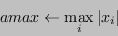
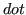

This function computes
the infinity-norm of a vector  .
.
If is a real vector
it computes infinity norm as:

else if is a complex vector then it computes the infinity-norm as:

psb_geamax(x, desc_a, info [,global])
psb_normi(x, desc_a, info [,global])
Table 4:
Data types
 |
|
Function |
| Short Precision Real |
Short Precision Real |
psb_geamax |
| Long Precision Real |
Long Precision Real |
psb_geamax |
| Short Precision Real |
Short Precision Complex |
psb_geamax |
| Long Precision Real |
Long Precision Complex |
psb_geamax |
|
- Type:
- Synchronous.
- On Entry
-
- x
- the local portion of global dense matrix
.
Scope: local
Type: required
Intent: in.
Specified as: a rank one or two array or an object of type vdatapsb_T_vect_type
containing numbers of type specified in
Table 4.
- desc_a
- contains data structures for communications.
Scope: local
Type: required
Intent: in.
Specified as: an object of type descdatapsb_desc_type.
- global
- Specifies whether the computation should include the
global reduction across all processes.
Scope: global
Type: optional.
Intent: in.
Specified as: a logical scalar.
Default: global=.true.
- On Return
-
- Function value
- is the infinity norm of vector .
Scope: global unless the optional variable
global=.false. has been specified
Specified as: a long precision real number.
- info
- Error code.
Scope: local
Type: required
Intent: out.
An integer value; 0 means no error has been detected.
Notes
- The computation of a global result requires a global
communication, which entails a significant overhead. It may be
necessary and/or advisable to compute multiple norms at the same
time; in this case, it is possible to improve the runtime efficiency
by using the following scheme:

In this way the global communication, which for small sizes is a
latency-bound operation, is invoked only once.